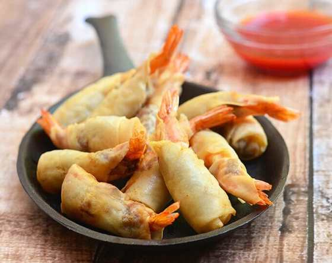

Rellenong Hipon

Rellenong Hipon stuffed with meat filling and wrapped in spring roll wrapper are the perfect appetizer! They're crispy, tasty and seriously addicting!
Preparation Time: 20 mins.
Cooking Time: 15 mins.
Total Time: 35 mins.
Ingredients
- 1 pound large shrimps (31-35 count)
- 1/4 pound ground pork
- 1/4 cup green onions, chopped
- 1/4 cup water chestnuts, chopped
- 1/4 cup carrots, shredded
- 2 cloves garlic, peeled and minced
- 1 teaspoon soy sauce
- 1/2 teaspoon salt
- 1/4 teaspoon pepper
- 15 pieces spring roll wrappers, cut diagonally into two triangles
- canola oil
Instructions
- Peel shrimps and remove heads, leaving tail intact. With a small knife, make an incision near the head and all the way down the center of the shrimp's back to the tail. With the tip of knife, remove and discard vein. Using hands, open flesh of shrimp until it lies flat. Make a small incision on the inside of the shrimp close to the tail.
- In a bowl, combine ground pork, green onions, water chestnuts, carrots, garlic, soy sauce, salt and pepper. Gently stir until well distributed.
- Place about ½ teaspoon meat filling in the center of the butterflied shrimp and press to close around filling.
- On a flat working surface, arrange spring roll wrapper with pointed side facing up. Place stuffed shrimp on wrapper. Fold one side of wrapper over shrimp and the then fold the pointed side down. Roll wrapper tightly around shrimp moistening sides with water and pressing lightly to seal.
- Place in a single layer, seam side down, on a dish and loosely cover with moist paper towel until ready to fry.
- In a pan over medium heat, heat about 2-inches deep oil until very hot but not smoking.
- Add prepared shrimps into oil with seam side down. Cook, turning on sides as needed, until golden, crisp and cooked through.
- Remove from heat and drain on a wire rack set over a baking sheet. Serve hot with sweet and sour sauce.